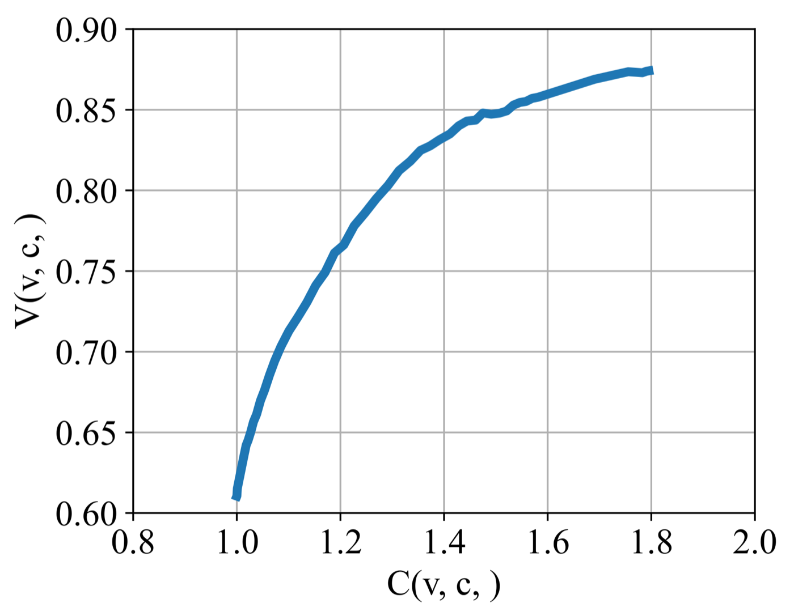
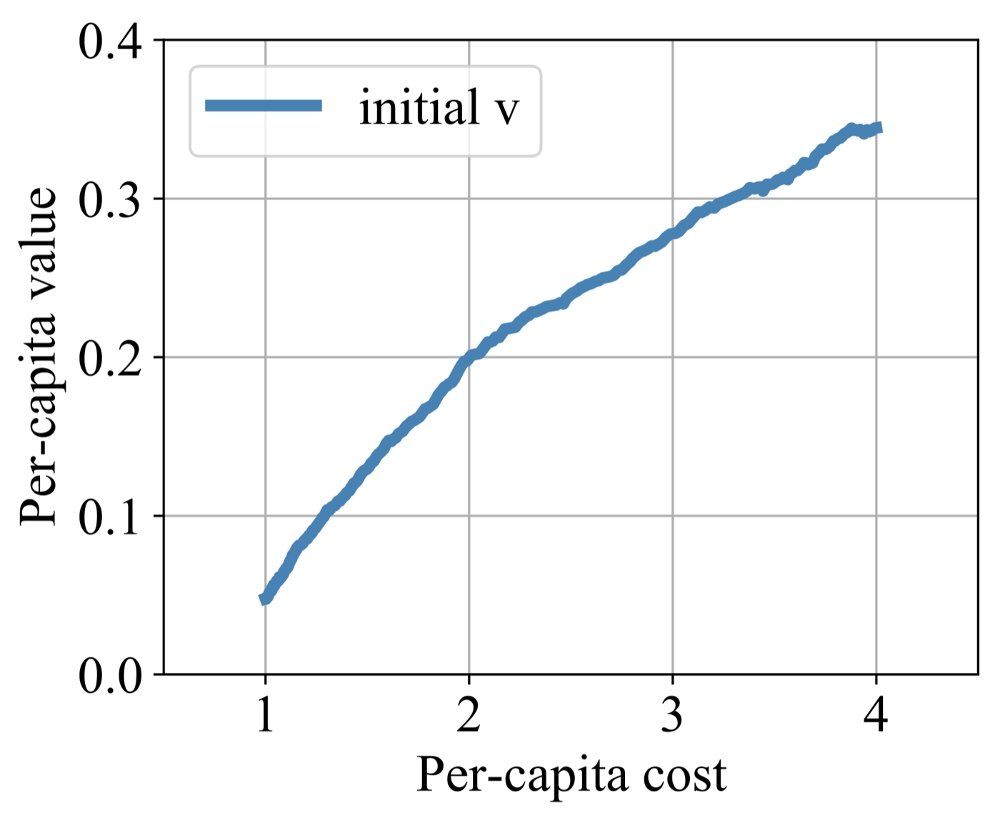
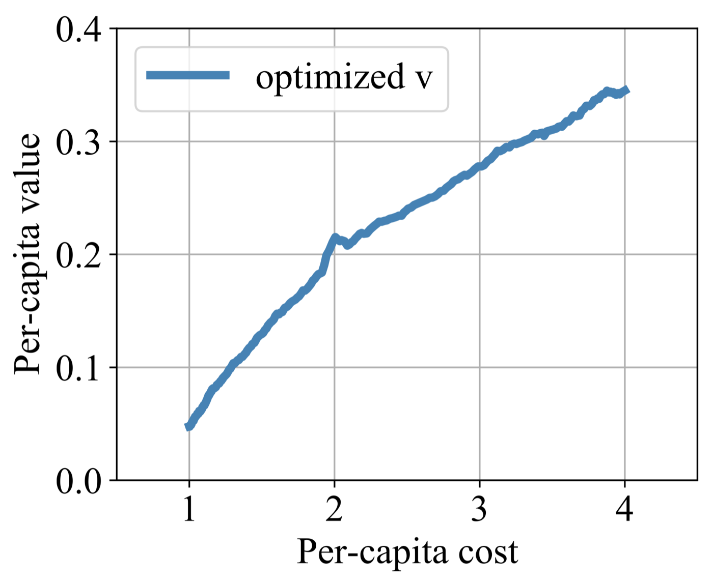
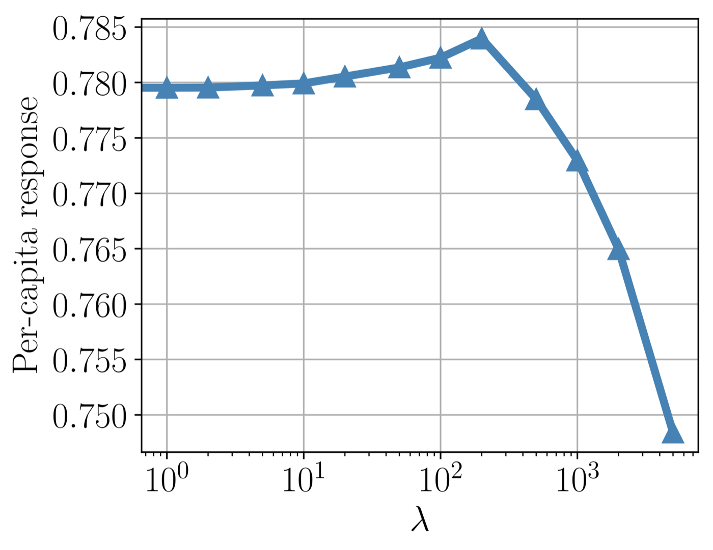

- AUCC 0.7904CRITEO-UPLIFT v2 で、有限差分で勾配を推定する提案法が最も高かった。DRP は 0.7739、二段階法は 0.7561（Table 1）。
- 反応 +1.24%快手のオンライン A/B テスト（1,420 万人、1 週間）で、二段階法と比べて1人あたりの反応が 1.24% 増え、1人あたりのコストは 0.369% 減った。
- \(\lambda \le 200\) で改善オフライン実験では、正則化の重み \(\lambda\) を 200 まで上げるほど1人あたりの反応が増え、500 以上では二段階法を下回った。
二段階法では効果の予測と予算の配分を別々の目的で解く
オンラインのサービスは現金ボーナスや割引クーポンで利用者の行動を促す。施策の費用には総額の上限があることが多く、人によって報酬への反応が違うので、誰にどれだけ配るかを一人ずつ決める必要がある。
近年の多くの方法は二段階で解く。第 1 段で因果推論のモデルが処置ごとの反応を予測し、第 2 段でその予測を係数にして整数計画を解く。論文によると、二つの段階の目的は根本的に違い、著者らは実務でも両者が完全には一致しないのを観察している。たとえば予算がごく少ないときに配るべきなのは、報酬にとくに敏感な少数の人だけである。そのため、全員の平均では精度が上がったモデルでも、その少数で外れていれば配分の成果はかえって下がりうる。
論文はこれを解消するため、予算内の事業目標そのものを学習の目的に入れる。同じ問題意識をもつ決定志向（decision-focused）の手法として、論文は DRP（解説）を比較対象にしている。
予算配分は多肢選択ナップザック問題になり、双対変数 α を 1 つ決めれば配分が決まる
処置は \(K\) 種類の報酬額で、利用者 \(i\) に処置 \(j\) を与えたときの反応（例：動画を投稿するか）の確率を \(v_{ij}\)、期待コストを \(c_{ij}\) とする。予測モデルは利用者の特徴から \(K\) 個の反応と \(K\) 個のコストを出力する DNN の S-Learner である。総予算 \(T\) のもとで \(M\) 人に処置を 1 つずつ割り当てる問題は、多肢選択ナップザック問題（MCKP）になる。
MCKP は NP 困難だが、論文は先行研究（LBCF、解説）や DRP にならい、整数条件を外した線形緩和の双対問題を解く。双対問題の変数は \(\alpha \ge 0\) の 1 つだけで、二分探索などで求まる。\(\alpha\) が決まれば、各人には「反応 − α × コスト」が最大になる処置を割り当てる。
二段階法は予測モデルを反応とコストの当てはまり（交差エントロピーなどの損失 \(L_{\mathrm{SL}}\)）だけで学習し、その予測をこの式に入れる。
予算内で得られる1人あたりの反応 Q を RCT データから推定し、学習の正則化項にする
\(\alpha\) を 1 つ決めると上の規則で配分 \(x\) が決まる。相補性条件から、この \(x\) は総予算を \(\sum c_{ij}x_{ij}\) とした MCKP の最適解でもある。つまり、\(\alpha\) を動かすことは予算を動かすことに当たる。
配分の成果は Expected Outcome Metric（EOM）という方法で RCT データから推定する。RCT で実際に受けた処置 \(t_i\) が、モデルの配分と一致した人の集合を \(\mathcal S_\alpha\) とし、その人たちの観測値を平均して1人あたりの反応とコストを求める。
\(\alpha\) を 0 から大きくすると予算が減り、\(C\) と \(V\) の組が図2のような曲線を描く。論文の Algorithm 1 は、\(C\) が1人あたりの予算 \(T/B\) に一致する \(\alpha\) を二分探索で探し、そのときの \(V\) を \(Q(v,c)\) とする。\(Q\) は、与えられた予算で予測モデルの配分がどれだけの反応を生むかの推定値である。
学習では、1 回に \(B = 10{,}000\) 人の RCT データを使い、予測の損失から \(\lambda\) 倍の \(Q\) を引いた目的を最小にする。\(\lambda = 0\) なら二段階法の学習と同じになる。

Q は微分できないので、勾配を有限差分か NES で推定し、代理損失で逆伝播する
\(Q\) の計算には二分探索、argmax、集合の選び出しが入るので、自動微分では正しい勾配が得られない。論文は \(Q\) をブラックボックス関数として扱い、予測値 \(v\)（と \(c\)）についての勾配を 2 通りの方法で推定する。
- 有限差分（Ours-FD）：予測行列の 1 成分を \(\pm h\) だけ動かして \(Q\) の差を取る。全 \(B\times K\) 成分を計算すると \(Q\) を \(2BK\) 回評価することになるので、毎回 \(F'\) 個の成分だけを無作為に選び、残りは 0 とする。
- 自然進化戦略（Ours-NES）：正規分布の乱数方向 \(\delta_i\) に予測を動かし、\(\tfrac{1}{\sigma N'}\sum_i \delta_i\,Q(v+\sigma\delta_i, c)\) で勾配を推定する。符号を反転した方向を対にして（antithetic sampling）分散を減らす。計算は軽いが、推定した勾配にはノイズが乗る。
得られるのは \(v, c\) についての勾配で、モデルのパラメータ \(\theta\) についての勾配ではない。そこで論文は推定した勾配を定数として扱う代理損失を作る。
\(\mathrm{sg}\) は勾配を止める操作である。第 2 項と第 3 項は出力 \(v, c\) の線形結合なので、通常の逆伝播で \(\theta\) まで勾配を流せる。論文は、\(L_S\) と \(L_R\) の \(\theta\) についての 1 次の勾配が一致すると述べている。なお論文の式では、\(L_S\) の第 1 項は \(L_{\mathrm{SL}}\) ではなく \(L_{\mathrm{CE}}\) と書かれている。
（解説者の注）EOM を損失とみなして有限差分で勾配を推定する考え方は、DFCL（解説）の改良有限差分（DFCL-IFD）にも出てくる。
合成データ、CRITEO-UPLIFT v2、快手の報酬データの 3 つで評価した
- 合成データ：RCT の利用者 10,000 人、処置 4 種類（コストは処置 \(j\) で \(j\)）。特徴量はなく、勾配の推定と EOM の働きを確かめるために使う。予測モデルは学習せず、予測行列 \(v\) を直接 Adam で 100 ステップ動かして \(Q\) を大きくする。1人あたりの予算は 2.0。
- CRITEO-UPLIFT v2：広告の RCT データ（1,390 万件、特徴量 12 個）。処置は広告を出すかどうかの二値で、DRP の論文にならい訪問をコスト、コンバージョンを価値とする。7:3 に分け、AUCC で比べる。比較手法の値は DRP の論文から引用し、提案法は 20 回実行している。
- KUAISHOU-PRODUCE-COIN：投稿者に「24 時間以内に動画を投稿すればコインをもらえる」課題を出す施策の、1 週間の RCT データ（8,240 万件）。コインは 30 段階で（\(K = 30\)）、反応は課題を達成したかどうか、コストは達成したときに実際に渡したコイン数である。数値は正規化して報告されている。
Criteo と快手の実験では、ベースの MLP（512-256-128-64）の上に処置ごとの出力を載せた同じ構成を使い、\(Q\) を評価する1人あたり予算は学習のステップごとに一定の範囲から無作為に選ぶ。主な比較相手は同じ DNN の S-Learner を予測の損失だけで学習する二段階法 TSM-SL である。
このページの数値は arXiv v1（2023 年 2 月 9 日）の本文、表、図のキャプションによる。2026 年 11 月の時点で、出版版は確認できなかった。論文はコードを公開予定としているが、公開先は確認できなかった。
合成データでは推定した勾配で Q を 0.1996 から 0.2141 に上げられた
真の反応確率と真のコストを使った場合の \(Q\) は 0.2123 である。無作為に作った初期の予測行列では \(Q = 0.1996\) で、NES で推定した勾配を Adam に入れて 100 ステップ更新すると 0.2141 になった。論文は NES のサンプル方向の数 \(N'\) を増やすほど、推定した勾配と正確な勾配（有限差分で全成分を計算したもの）のコサイン類似度が高くなることも図で示している。
更新後の値は真の値を使った場合の 0.2123 を上回っている。論文は、データが 10,000 件しかないので Adam が学習データに強く過学習しうると述べ、予算 2.0 の付近に山ができる可能性を指摘している。


CRITEO-UPLIFT v2 では提案法の AUCC が DRP と二段階法を上回った
Table 1 の AUCC は、有限差分版（Ours-FD）が 0.7904 ± 0.0096、NES 版（Ours-NES）が 0.7849 ± 0.0167 で、DRP の 0.7739 ± 0.0002、Direct Rank の 0.7562 ± 0.0131、TSM-SL の 0.7561 ± 0.0113 を上回った。論文は 20 回の実行の平均と分散を報告するとしている。
有限差分版のほうが AUCC は高いが、\(Q\) を評価する回数が多いため学習に時間がかかり、NVIDIA Tesla T4 GPU で 17.6 時間と、NES 版の 4.3 時間の約 4 倍だった。なお本文では、20 回の実行でばらつきが最も大きいのは Ours-FD だとし、その理由を NES の勾配のノイズで説明しているが、表で ± の値が最も大きいのは Ours-NES となっている。
快手のオンライン A/B テストではコストを増やさずに1人あたりの反応が 1.24% 増えた
オフライン実験では利用者を 8:2 に分け、1人あたりコストが 1.2 のときの1人あたり反応を EOM と二分探索で求めて比べた。\(\lambda\) を 0 から 5000 まで 13 通りに変え、各値で 4 回学習した平均を図5に示す。論文によると、\(\lambda \le 200\) では \(\lambda\) とともに反応が増え、\(\lambda \ge 500\) では学習が不安定になって TSM-SL より悪くなった。\(\lambda\) が大きすぎると正則化項が目的を支配し、予測値が真の値から離れるためだと論文は説明している。
オンライン実験では、全データで学習し直した Ours-FD（\(\lambda = 200\)）と TSM-SL を、学習データと重ならない 1,420 万人を半分ずつに分けて 1 週間比べた。この比較では EOM を使わず、各群 710 万人の実績から1人あたりの値を計算している。TSM-SL と比べて、1人あたりの反応は 1.24% 高く、1人あたりのコストは 0.369% 低かった。論文はこの改善を大きいと評価し、提案法が数億人の予算配分に使われていると述べている。

予算は MCKP の制約として明示し、その予算内の成果を学習の目的に入れる
この論文が推定するのは、処置ごとの反応の確率 \(v_{ij}\) と期待コスト \(c_{ij}\) で、どちらも 1 つの DNN の S-Learner が出力する。処置の効果は \(v_{ij}\) どうしの差として間接的に表される。コストは処置によって変わり、利用者ごとにも推定する。快手のデータでは課題を達成したときにだけコインを渡すので、コストは反応に依存する。Criteo では訪問をコストとしている。
処置は多値（快手では 30 段階のコイン）で、Criteo の実験だけが二値である。学習には RCT データを使い、観察データの利用は今後の課題としている。
予算制約は総額の上限として MCKP に明示する。配分は線形緩和の双対で求め、双対変数 \(\alpha\) を二分探索で決めて、1人あたりのコストを予算に合わせる。学習のステップごとに、\(Q\) を評価する予算を一定の範囲から無作為に選んでいる。
（解説者の注）処置が二値なら、規則「\(v - \alpha c\) が最大の処置を選ぶ」は、増分の比 \(\Delta v / \Delta c\) が \(\alpha\) を上回る人に配ることと同じで、ROI の高い順に予算が尽きるまで配る割当て（ナップザック問題の連続緩和）に当たる。多値の場合も \(\alpha\) はコスト 1 単位あたりの価格として働く。この論文はこの割当ての規則そのものは変えず、規則に入れる予測 \(v, c\) を、予算内の成果 \(Q\) が大きくなるように学習する。比を直接学習する DRP（解説）とは、そこが違う。同じ決定志向の系統の解説として、ほかに DFCL、E3IR、Bi-DFCL がある。
@misc{yan2023endtoend,
title = {An End-to-End Framework for Marketing Effectiveness Optimization under Budget Constraint},
author = {Yan, Ziang and Wang, Shusen and Zhou, Guorui and Lin, Jingjian and Jiang, Peng},
year = {2023},
eprint = {2302.04477},
archivePrefix = {arXiv},
primaryClass = {cs.LG},
doi = {10.48550/arXiv.2302.04477},
url = {https://arxiv.org/abs/2302.04477}
}